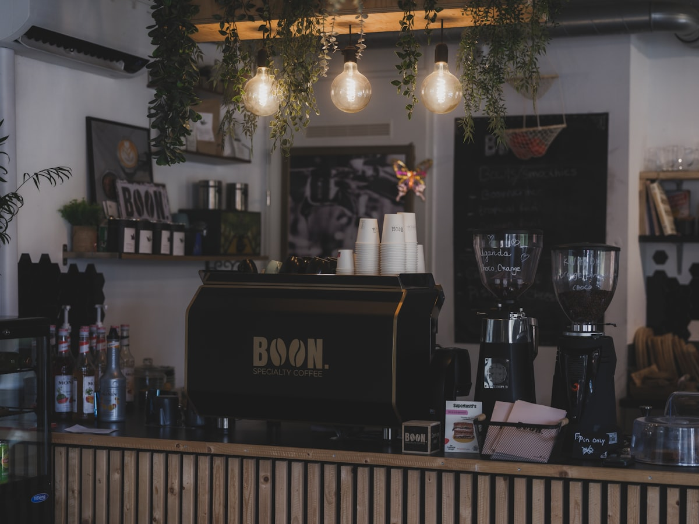
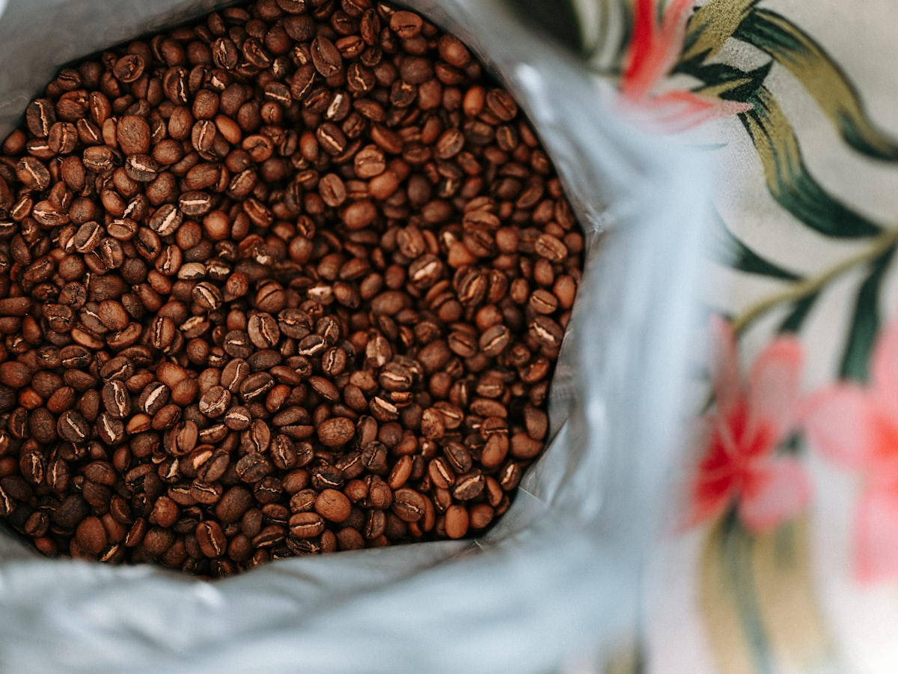

Зерно и место
О «Саже»
Небольшая кофейня на Мельничной: своя обжарка, один бар и зал, в котором легко засидеться дольше, чем планировали.
Мы открылись в 2021 году в бывшем цеху на Мельничной — отсюда и остался кирпич, который не стали штукатурить. Название «Сажа» — про цвет кремы на эспрессо и угольный тон зала, а не про копоть: обжарочная стоит в соседнем помещении, дым туда не заходит.
Зерно берём у трёх постоянных импортёров, обжариваем сами на барабанном ростере партиями по 12 кг и держим на витрине один лот за раз — обычно неделю-две, дальше меняем на следующий урожай. Так проще следить за свежестью и честно рассказывать, что именно в чашке: происхождение, высоту, способ обработки.
В зале — восемь столов и барная стойка на пять мест. Для тех, кто предпочитает не отвлекать бариста, на каждом столе QR-код: меню, корзина и статус заказа открываются с телефона, а сам заказ уходит прямо на бар. Тем, кто любит разговор с бариста и выбор у стойки — мы всегда рады и без телефона.
Связаться можно в Telegram — по вопросам меню, брони стола на группу или дубля заказа текстом.


Обжарка
Как мы готовим
Зелёное зерно приходит мешками по 30–60 кг, две недели отлёживается перед обжаркой — так вкус ровнее. Обжарщик снимает профиль под конкретный лот: светлее для фильтра и раскрытия фруктовости, чуть темнее — под эспрессо и молочные напитки, чтобы не резало кислотностью.
После обжарки зерно отдыхает 5–10 дней перед тем, как попасть в кофемолку на баре — раньше крема на эспрессо выходит нестабильной. Каждую неделю бариста дегустируют новый лот и решают, под какие напитки его ставить: это и есть тот самый «лот на витрине», который вы видите на главной.
Люди
Команда
На баре обычно два человека — так очередь у стойки почти не образуется даже в субботу утром.
Обжаривает шесть лет, ездит на закупки сам и держит на витрине только то, что попробовал лично.
Собирает сезонное меню и учит новых бариста наливать латте-арт без «хвостов».
Печёт круассаны и чизкейк с утра — во второй половине дня выпечка часто заканчивается.
-
Адрес
ул. Мельничная, 14
Калуга, вход со двора -
Часы
Пн–Пт 8:00–21:00
Сб–Вс 9:00–22:00 -
Связь
Вопросы, бронь стола
Telegram
Как устроено
Если удобнее заказать со стола
-
Стол Сканируете QR на столе — экран «Вы за столом N».
-
Меню → корзина Выбираете напитки, объём, комментарий для бариста.
-
Оплата → статус Оплата с телефона → заказ на бар, статус обновляется у вас на экране.
Ближайший стол почти свободен
Заходите — покажем лот на витрине и нальём то, что сейчас лучше всего раскрывается.